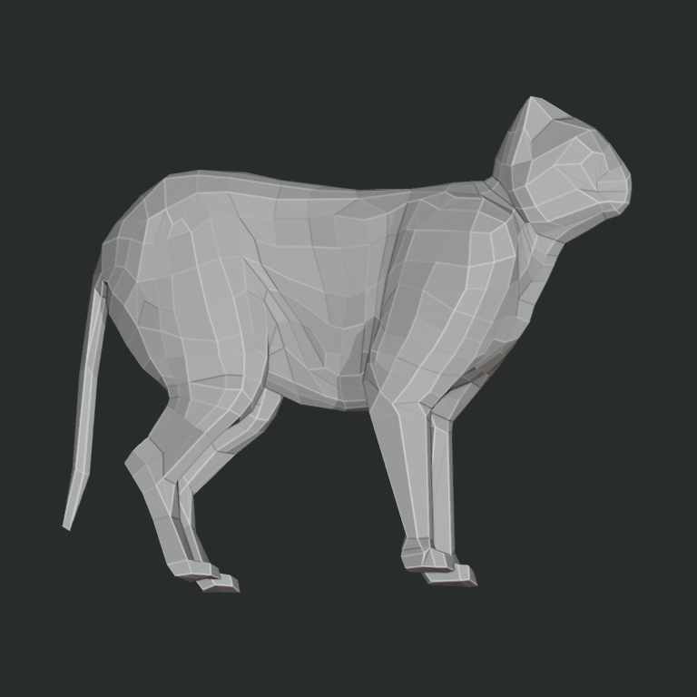
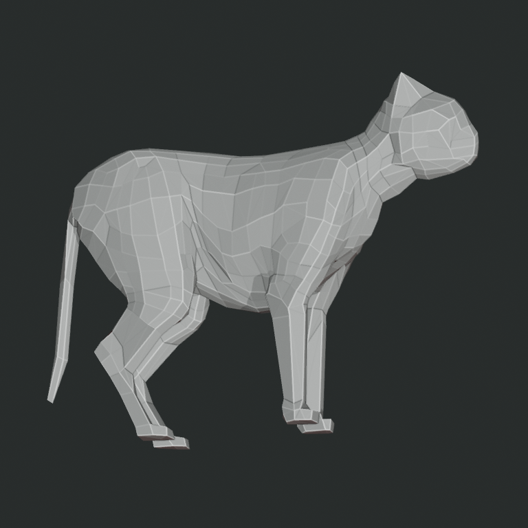
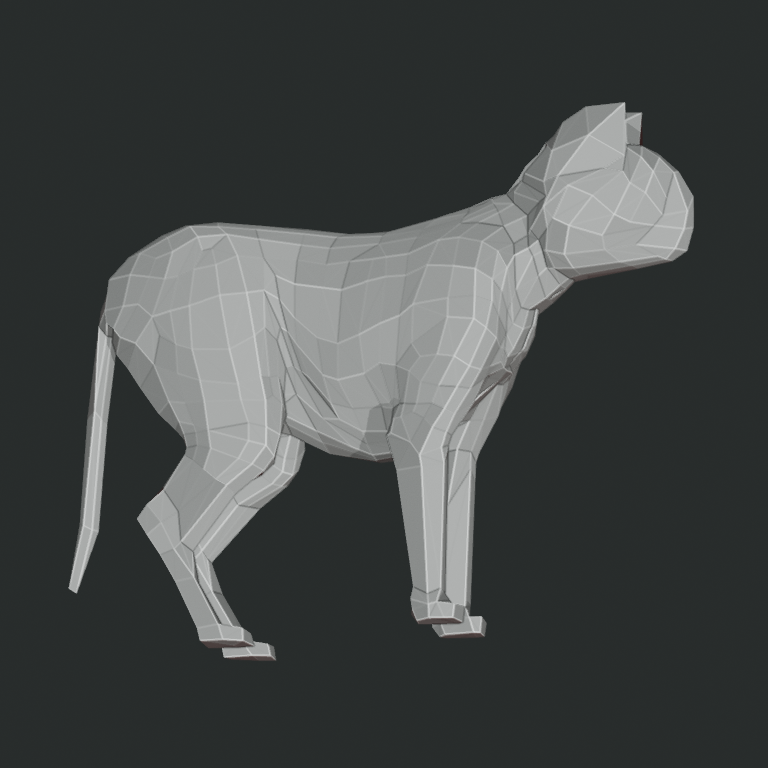
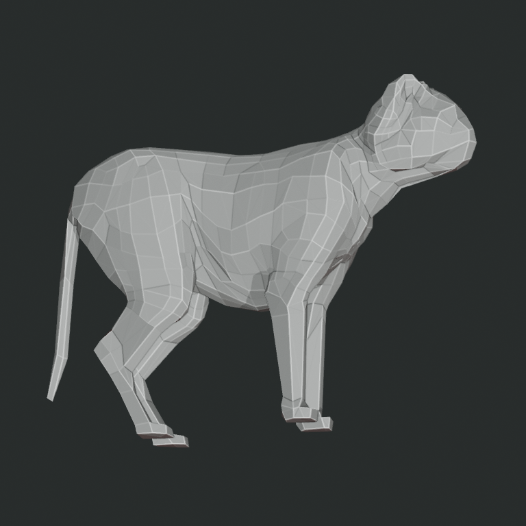
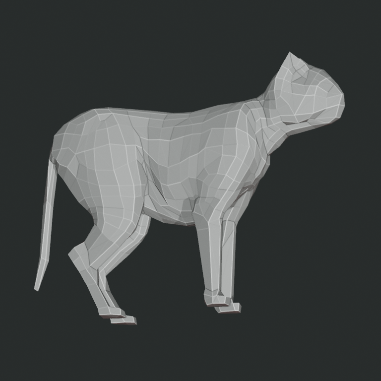

Operator-authored structural revision ladder
Historical source revisions, same object identity and inspection renderer. Provenance only: this sequence is not admitted as a monotonic quality axis.




